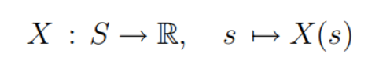
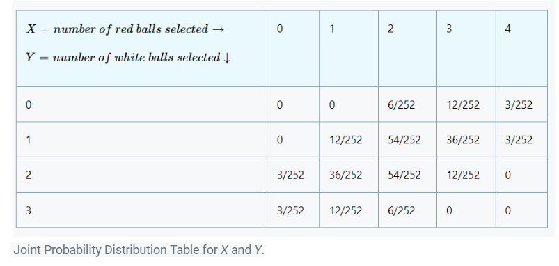

Probability theory is a branch of mathematics that allows us to reason about events that are inherently random. Another way to think about probability is in terms of repeatable statistical experiments. A statistical experiment is an action or occurrence that can have multiple different outcomes, all of which can be specified in but where the particular outcome that will occur cannot be specified in advance because it depends on random chance.
In general, the probability theory is applied to two broad categories of applications:-
Sample Spaces : The SAMPLE SPACE of a statistical experiment is the set of all possible outcomes
For example:
Random Variable: A random variable is a 'random number', meaning a number which is determined by the outcome of a random experiment.
Usually denoted X, Y, . . . . The range of X is the set of possible values for X.
Mathematically, X is a real-valued map on the sample space S:

If the range of X is finite then we say that X is a simple random variable.
Joint Distribution: Given a collection of discrete random variables X = (X1, X2, . . . , Xn), let Ri be the range of Xi . Then the range of X is the Cartesian product R1 × · · · × Rn. Their joint pmf is the collection of probabilities P(X1 = x1, . . . , Xn = xn) for every point (x1, . . . , xn) in the range of X1, X2, . . . , Xn.
Suppose that we have two random variables X and Y.If we want to know about the values that X and Y assume simultaneously during outcomes of a random experiment, we require a more complicated structure known as the joint cumulative distribution function of X and Y , defined by FXY (x, y) = P(X ≤ x, Y ≤ y)
Here, we call FX(x) and FY (y) the marginal cumulative distribution functions of FXY (x, y).
For example:
We have a box of ten balls in which four are white, three are black, and three are red. One has to select five balls out of the box without replacement and count the number of white and red balls in the sample. What is the probability one observes two white and two red balls in the sample?
Here, the total number of outcomes is 10C5=252.
Since the box has four white balls, the number of ways of choosing two white is 4C2. Of the three red balls, one wants to choose two – the number of ways of doing that is 3C2. Last, the number of ways of choosing the remaining one black ball is 3C1. So the total number of ways of choosing two white, two red, and one black ball is the product,
P(X=2, Y=2)=4C2x3C2x3C1/10C5=54/252,
Where X=number of red balls selected, Y=number of white balls selected.

Independence: Two events A and B are INDEPENDENT EVENTS if
Two events A, B are independent if P(A|B) = P(A).
P(A|B) = P(A) ⇐⇒ P(B|A) = P(B) ⇐⇒ P(A ∩ B) = P(A) P(B)
For Example:
A box contains two coins: a regular coin and one fake two-headed coin (P(H)=1). I choose a coin at random and toss it twice.
Define the following events.
A= First coin toss results in an H.
B= Second coin toss results in an H.
C= Coin 1 (regular) has been selected.
Find P(A|C),P(B|C),P(A∩B|C),P(A),P(B), and P(A∩B). Note that A and B are NOT independent, but they are conditionally independent given C.
We have P(A|C)=P(B|C)=12. Also, given that Coin 1 is selected, we have P(A∩B|C)=12.12=14. To find P(A),P(B), and P(A∩B), we use the law of total probability:
P(A)=P(A|C)P(C)+P(A|C^c)P(C^c)
=12⋅12+1⋅12
=34
Similarly, P(B)=34. For P(A∩B), we have
P(A∩B)=P(A∩B|C)P(C)+P(A∩B|Cc)P(Cc)=P(A|C)P(B|C)P(C)+P(A|Cc)P(B|Cc)P(Cc) (by conditional independence of A and B)
=12⋅12⋅12